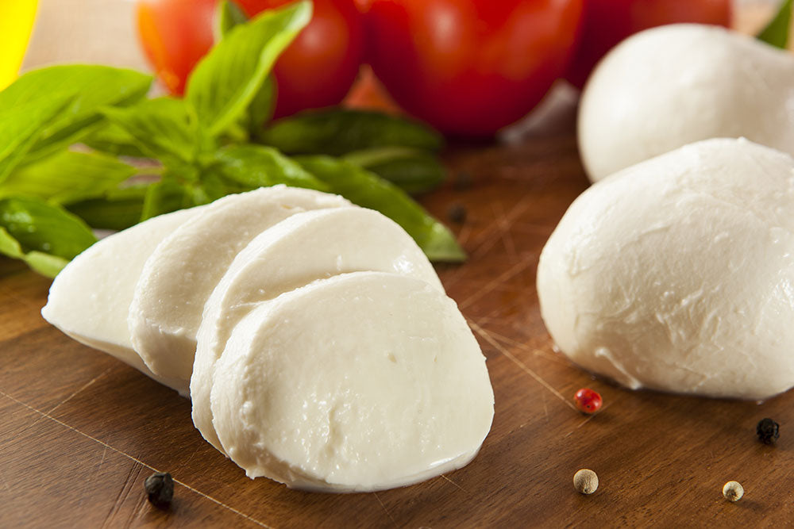

Overview of Mozzarella Cheese
What is Mozzarella Cheese?
Mozzarella is a soft, stringy cheese that belongs to the pasta filata family, which also includes cheeses like Queso Oaxaca and Caciocavallo. The term “pasta filata” translates to “spun paste,” referring to the unique method used in its production where the curds are kneaded and pulled to create the characteristic mozzarella balls. This cheese is primarily made from milk sourced from cows, goats, sheep, or buffalo.
Characteristics of Mozzarella
Mozzarella is classified as a fresh cheese, meaning it is intended for consumption shortly after production. It typically has a mild flavor with a slightly sour undertone. The texture can vary depending on the moisture content; high-moisture mozzarella is softer and creamier, while low-moisture mozzarella has a firmer texture and longer shelf life.
Types of Mozzarella Cheese
There are several types of mozzarella cheese available today:
- Fior di Latte: This is traditional cow’s milk mozzarella known for its mild flavor.
- Mozzarella di Bufala: Made from buffalo’s milk, this variant has a richer and creamier texture compared to cow’s milk mozzarella.
- Low-Moisture Mozzarella: Commonly found in the U.S., this type has less than 50% moisture content and is often used in pizza making due to its melting properties.
- High-Moisture Mozzarella: Found in grocery stores, this type retains more moisture but has a shorter shelf life.
Production Process
The production of mozzarella involves two main methods: direct acidification or the culture/rennet method. In both cases, raw milk is pasteurized and then coagulated to form curds. Once curds reach a specific pH level (around 5.2), they are cut into small pieces and heated in warm water until they become stretchy and elastic. This process allows for the formation of long strands of cheese that can be shaped into balls or logs.
Culinary Uses
Mozzarella cheese is incredibly versatile and widely used in various dishes including:
- Pizza
- Lasagna
- Caprese salad
- Frittatas
- Stuffed chicken
Its ability to melt well without becoming watery makes it an ideal choice for many recipes.
Historical Background
Mozzarella originated in Southern Italy around the 1st Century A.D., likely first produced using sheep’s milk before transitioning to buffalo’s milk as it became more popular. The cheese remained largely regional until advancements in refrigeration allowed for broader distribution in the 20th Century.
In summary, mozzarella cheese stands out not only for its unique production process but also for its versatility in culinary applications and rich history rooted in Italian tradition.